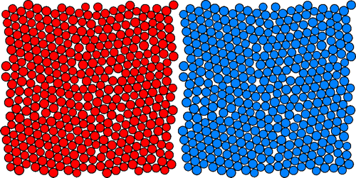

砖块
砖块是一种经过压实、具有黏结的集合体，可以重复复制多次以构建大型模型。 砖块是在单独的 PFC 运行中，通过在周期性空间内压实颗粒集合体、然后以紧凑形式存储而得到的。 此后即可将这些集合体的副本完美地拼接在一起，因为砖块一侧的颗粒几何排列是其对侧的镜像（见下图）。

由于砖块已经压实并处于平衡状态，因此可以非常快速地构建大型模型。 （请注意，接触力也存储在砖块内部；如果原始力处于平衡状态，则这些力在两块砖块之间的接缝处会自动平衡。） 通常，使模型达到平衡所需的时间会随模型尺寸的增大而大幅增加，因为（关于不平衡力的）信息必须在整个模型中反复传递。 当模型由已达平衡的砖块构成时，无需额外时间即可建立整体平衡。因此，可以几乎瞬时地组装出大型平衡模型。
| 这些内容对您有帮助吗？… | FLAC3D © 2019, Itasca | 原文更新于 2020 年 10 月 8 日 |